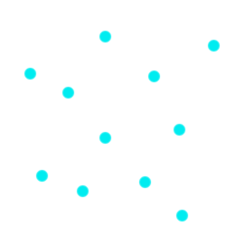
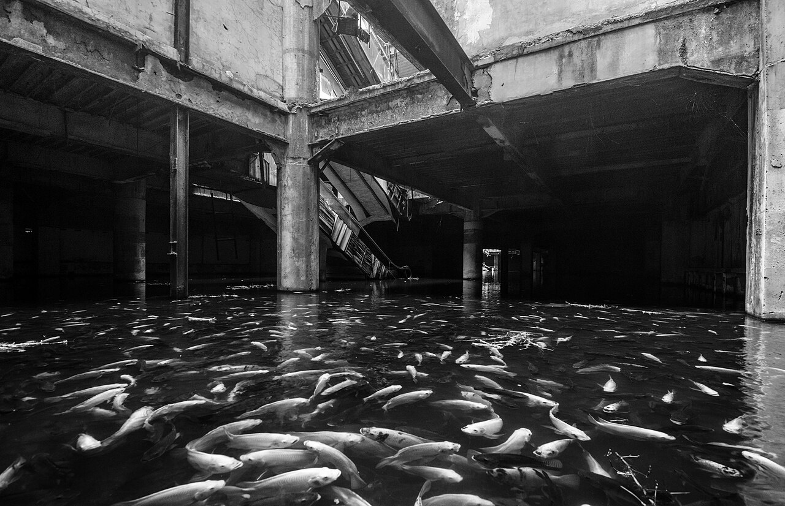

River
sexual contentthe boat is his father's, was, it is a slim wooden canoe with space for maybe about three people, or two people and a bag, and it sits quietly on the river, moored with a makeshift anchor (a big enough rock he found on the ground and some rope). the river tugs at it gently, suggestively. we sit on the banks and he sets down this big bag of stuff he's been lugging around on the walk here, whenever i asked what's in it all he'd say was "i'll show you later" - and now here he is showing me, later.
so the bottles are the easiest. just a few parts. you know actually the word for what the bottles are isn't 'fragile' it's 'frangible' - breaking up into fragments. but yeah. it's simple you can't fuck it up really, and we have the river here if you do.
are you sure it's a good idea to make these ourselves? seems dangerous.
are you scared? it's alright if you are.
honestly no. just worried about this logistically. and i'm new at this.
these ones you can't fuck up. and again i'm here and i've done this a lot. trust me. not a lot of skill required either. how's your wrist?
it's fine. i dressed it up myself.
you know how?
yeah i learned when i was like ten. i had a lot of practice.
mm. so it's three parts. the fluid inside the wick and the bottle itself. but i like adding a little fourth part, a match you tape on the side. just in case of an emergency. fill the bottle first - wait hang on one second,
alex finds a canister in his bag, sets it down between us.
yeah, just take that. don't fill it to the brim, you don't need that much fluid.
he fills it first, then passes it to me. it's an awkward maneuver, the canister too heavy and the bottle too light all at once.
then you gotta stuff it in there. make sure it's airtight. and ball it up if you need to.
i stare down at the scrap of cloth he hands me. it's cut out from a shirt, old band merch, black print on white tee.
swans?
oh, yeah, that. my dad used to listen.
he mentions him with the same unaffected nonchalance you mention the weather. i take this piece of his father and i silently jam it into the rim of the bottle. i rip some tape from the roll and i take a match from the box and i stick it on the side and after it's done i show the bottle to him and he nods yeah, good job, set it down here, and i set it down there, and eventually the bottle with his father stuffed into the mouth gets buried underneath ten more bottles we make in the span of fifteen minutes.
it is a smooth rhythm. out from the pile, grab the cloth, pour the gas, take the tape and the match, set the bottle down. we form a factory line of two people. it is over as soon as it starts.
right. good. we're out of bottles so that's all. see! didn't blow up in your face.
mm.
these next ones though, you gotta be careful. like for the most part what's in the bottles isn't so volatile. but some of the stuff here is. and you have to be careful here, because we're handling these so closely.
alright. i trust you. if i die it's your fault and i'll never forgive you.
i think you'd forgive me eventually.
nope. i'll haunt you forever. from the grave and shit.
okay well you won't die. trust me. remember that if anything ever starts smoking or you just have a bad feeling about it you throw it into the river. yeah?
yeah.
and on a quiet day outdoors on the riverbank as the starving sun is beating down on dead grass and a barely-flowing river with no hills or mountains or buildings out or even clouds it is on this day that alex shows me how to make little red sticks of dynamite, calmly and gently, with the movement of his fingers the same as a swan's neck turning in a lake, like a ballerina pirouetting into a knife's edge. as he walks up and crouches down face thirty centimeters away from me knuckles on mine it's a day like any other, and it's just us and the river, the moon and the sun.
okay, just tamp it down like that. with your fingers.
like this?
he presses my fingers down with his for me, skin on skin on gunpowder, and i feel his slow breaths on my face as he says "no, like that, see". i try to see. it's difficult.
make sure it's secure and compact. this is the primer. this isn't what goes off - it's what makes what goes off go off. yeah?
yeah. okay.
is it done? let me take a look?
his hands graze mine again as i hand him the stick and i don't say anything about it and he doesn't notice. he looks at it, says it's done, hands it back to me alongside another bag of powder.
now here - here's the real shit. be careful. but just do the same thing i showed you. another layer.
he demonstrates again, and he's got this look in his eyes i recognize, it's the look of him an hour into wiring up explosives around the buildings and hooking it up to a detonator, it's a look of quiet, reserved work. eyes like steel.
like that, see? and then you just twist the cap back on, put the fuse in, and we're done.
he puts the first stick aside, and takes out the materials for another one. with an incomplete stick in my hand i stay there, watching him quietly work, like looking over the shoulder of a pianist, eventually they forget you're there. i look at his fingers, dirty and blackened, and the same lime hoodie he always wears. his face is slightly dark from the powder and his hair is a brown that would shine in a stronger sun's rays. his brow is furrowed. he is sixteen, my age, and about 10 centimetres shorter than me, and i look down at this boy and i feel something and i'm not sure what. i am sure - i am sure what it is. but i push it aside and finish the work that's remained stagnant in my hands for 2 minutes.
we have none left.
is it all packed up?
yeah, i think so. wait. mm. yep.
how many?
all told it's like 30 of each, which isn't bad.
that's enough for two or three.
maybe even four.
maybe even four.
alright. let's go?
where are we going?
down the river.
he stands up, grabs a spare hoodie and zips the bag closed, heading towards the river. i sit and wait. my sleeves are stained and dirty and there is a thin layer of something i don't know what exactly stuck to my face. there is dirt underneath my fingernails and dirt in my skin and dirt everywhere. and i pick at it until alex, on the very edge of my vision, standing by the riverbank, takes the hoodie off, and i pause, and i see lines down his back and the delineation of his shoulders and his arms and hands, he is shorter and thinner and more muscular than i am but there he is by the river, just doing, being, existing, and i'm looking, i don't know why i'm looking. it's him and me and the river and the sun and his back is a light brown but his wrists and hands are dark black from the work and his hair's just about touching his ears and he bends down and dips his hands in the river and cleans himself off with it. he splashes his back with water and washes his face of the gunpowder, then his neck, his hands and wrists, and he takes his dirty hoodie and dries himself off with it, top to bottom, then as quick as it started he puts the spare hoodie on, arms above his head, and walks back to me, and even quicker i've forgotten it, or tricked myself into thinking i've forgotten it. i do not know it yet but i will replay these images days from now when i am alone.
are you ready?
yeah. i need to clean up too though.
i keep my shirt on as i do.
the river is around fifty metres wide, a pale green, and soft in its movement. he takes an oar and i take an oar and i sit behind him as we work our way down the river, staring at the back of his head. the hungry animals that are the sun and the moon have begun the ritual dance of taking each other's place.
did you do this with your dad often?
not often, but enough, i was like six and i couldn't get my hands around the oars properly.
when's the last time you did this?
when i was ten, around there. did it alone. have you ever done this before?
no, we usually stayed in the city limits.
mm, all the fun stuff is outside of it though.
depends on what you find fun. there's really not much to see here. just the same old shit. grass and the sky and the river. the river doesn't even bend.
it bends a little. it's subtle. that's how you know.
know what?
that it's alive.
mm. do you have any water?
yeah, in my bag. i wouldn't try to drink this water though. it's alive but it's not that alive.
what exactly is alive to you?
most things outside of the city.
is the grass alive?
yeah.
is the moon?
less so than the sun.
is concrete?
no. it's obvious to most that whatever's alive, that's all the shit you have to respect. because there's not much of it left. what people forget is sometimes when things aren't alive, they just aren't alive and that's the end of it. but some things are actively hostile to life. they remove the fire of it. and when you see something like that it's your god given duty to kill it before it can kill anything else.
is that why you do all of this?
have you ever thought of hitting one inside the city?
yeah, but i've always decided against it.
why though? i mean what you're doing here is just more for you than it is for anyone else. no one really cares about these old things in the middle of nowhere.
he blows some bubbles in his drink through the straw.
too much damage.
to what? the roads? the lamps? the people, even? the people in there are barely people. they've built this themselves, and they continue building it. isn't that exactly the kind of thing you rally against?
not all of them build their own cages. there are a significant number of them that are just prisoners. like me and you. i can't justify that to myself.
i guess.
i mean look around you. there's a bunch of people here. they're just eating and drinking and walking and talking and whatnot. and if you hit one in the city this is who you're killing.
mm. well that's how you think about it. you treat this like a ritual.
that's what it is for me. what exactly is it for you?
it just helps. it's soothing.
helps what?
the lights above are too bright and the chairs are too hard to sit on comfortably. the table is too big. we sit opposite each other and i stare off somewhere, anywhere, to avoid looking at him. through the window i can see the ground floor of a residential building 100 storeys tall. there are 100 more surrounding it, and 100 more surrounding each. the lamps outside cast a disgusting yellow light on everything. there is something in the corner and i ignore it. it is midnight, with the boat and the river and the bottles a distant memory now, and it is terrible.
hello?
oh. what did you ask?
what are you looking at?
no, before that.
well forget that. what are you looking at? you see some things?
you mean things things or just things?
things things. come to think of it you still gotta tell me about that shit.
mm. some other time.
INT. NATHAN'S ROOM - 2AM
where do i sleep?
i have a spare mattress on the ground.
right.
cool shit you got here. kind of small though.
thanks. it's not much.
he starts picking up random things on shelves and drawers, inspecting them, putting them back down.
you kept this?
he holds up a bloody rock. one i know.
keeps me humble i guess.
sure, cool. like a little memento or something.
sleepover... how exciting. we're so high up too. i'm usually below the twentieth floor. i love heights.
it's my room. 3 metres by 5 metres. twin size in the corner. posters on the wall and the door. wardrobe, opened, messy pile clean pile on the floor, kicked to the side to make space for the mattress on the floor. figurines on the shelf. alex on the mattress. soda cans on the table. trash can, overflowing. air conditioner on. alex sitting crosslegged on the mattress on his phone. empty water bottle. stuffed animal i've had for five years. loose pills in a packet in a little bag on the table. alex lying down on the mattress on the floor.
hey look at this.
shows me something on his phone. i forget it as soon as it is over. i catch a look at his face for half a second and it's too long.
he stands up now, goes back to looking around my stuff, the wardrobe, the table, the shelves, picks up the ziploc with four or five white cut pills and asks
what's this for?
nerves.
ah. can i try one?
go ahead, why not.
i don't think it'll do much for you though.
we'll see!
something in the corner i ignore it.
what time is it? like 3?
yeah it's really late.
mm.
long day.
we got a lot done though.
it is 3am and i am sitting down on my twin-size and he's standing up and now he's looking at me.
we did. do you, do you still have the
stuff we made in your bag?
mhm. all settled.
do you wanna go to bed now? i'm really tired.
something in the corner again
sure. i'll go turn off the lights. night night nathan.
you too.
he turns off the lights.
there's still the dim light off his phone. enough light to see the outlines of things. there are two red dots in the corner.
you don't see that right? in the corner?
uhh, no. why? do you see something.
three red dots.
nope. i'm good.
you sure?
yeah. don't worry.
closer.
there's two doors, one leading to the bathroom, one to the corridor to the rest of the house. i need water. i get up and on my way to the bathroom i step on a leg or an arm or something and he says ow, i say shit, sorry, he says you're good. i get my water and i come back. and i lie back down.
are you going to sleep soon? you're still on your phone.
i don't sleep much really.
okay. i'm going to bed.
(close my eyes and the dots are still there - close my eyes and i can't tell much of a difference)
five minutes of sleeplessness and then i feel something on me.
it's like skin, or hands, or anything, and i call out
"hey, are you there?"
but he is sound asleep, phone off, and the skin-hands-anything are on my feet, pressing down, something.
alex? are you there?
skin-hands-anything go up to my calves, legs, and now i feel fingers, clearly, human ones, five fingers two knuckles on each (one on the thumbs) i feel them clearly, hands not-attached to a face or a body there's one
and then two
and then three and then an impossible number of them all at once andalex?
it's him, i see him. it's his face delineated in the nothing-light of my room but it's him
and it's his face and it's his body
by the riverbank with the hoodie offhis back and the lines running down it, his chest and stomach and shoulders and arms and he's on top of me and
he has six thousand hands all over with his fingernails in my eyes and
his hands on my chest and my arms and - and my hair gripped tight
i'm lying down and he's straddling me and his hoodie's on
and his brown hair and his three red dots for eyes and he
kisses
me until i can't breathe i
fuck it's good, it's good and
more, please, fuck, fuck, please, fuck
he's got his tongue
in my mouth now exploring everywhere and his lips are soft like honey and i feel him pant and breathe and moan against my ear as i try desperately to do to him what he's doing to me and his ten thousand hands are working underneath my clothes each finger
gliding across the my skin and my shirt and the waistband of my boxers
and i arch to his touch like a fucking animal and i need this and i need this and i'm going to fucking throw up, i'm going to fucking throw up all over myself, fuck and when i can say it it comes out pathetically like the whimper of a dying animal please just touch me alex fuck please i need this i need you to touch me and there are six thousand hands everywhere except touching me where i need it and we lock eyes and where the pupils of his eyes are supposed to be are six-seven-eight-now-nine red dots and all at once it's hands and flesh and blood and sinew and he presses his face to my shoulder and bites down hard into my collarbone and it's pain and i'm bleeding from my shoulder and he presses ten hands into the wound breaks away from the kiss and puts his bloodied fingers into my mouth and
warm and gentle like the dead sun in the sky, like a river slightly-bending down fields of dead grass,
like reverence
, like prayer and thenhe
pulls away and ii love you.
i love you.
i love you.
i love you.
kill him
i find my hands
and the bones of his neck and i
strangle him until there is nothing left but the hallucination of a hallucination of a kiss, of hands, of the sun's rays
he dies on top of me
turn the lights back on?

he's by my side at the toilet as i vomit into it.
you're okay. it's okay. do you want some water?
yes.
okay. what happened?
same old shit.
you saw something? what'd you see?
you.
me?
you.

Rooftop